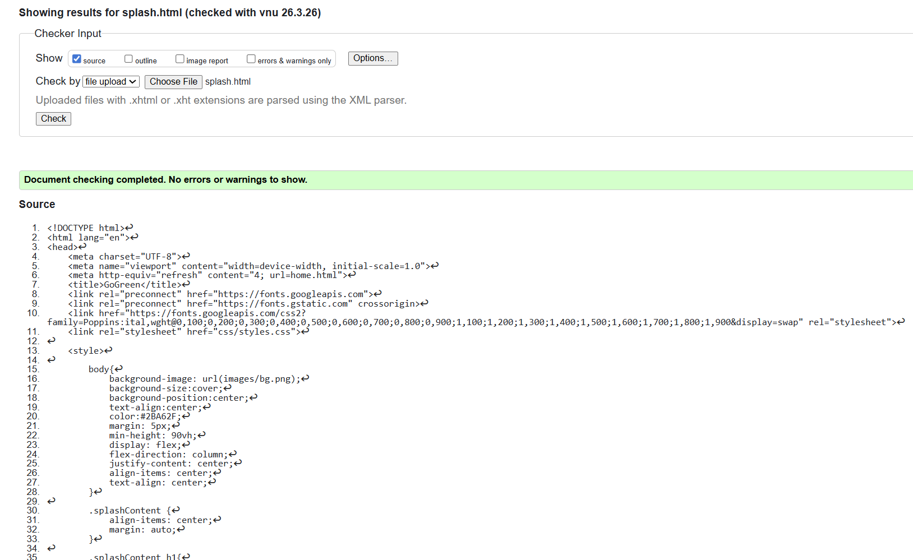

Home Page validation report
The Home Page was tested using the W3C HTML and CSS validators to ensure compliance with web standards. The validation report confirmed that the page structure and styles follow best practices, with minimal warnings. This ensures that the page is more robust, compatible across browsers, and easier to maintain in the future.
Any minor errors identified in the validation were addressed promptly, reflecting careful attention to semantic HTML, proper nesting of elements, and adherence to CSS syntax rules.

Back to Page Editor page
Include a link back to the corresponding section of the Page Editor.
Gallery Page validation report
The Gallery Page was tested using W3C HTML and CSS validators to ensure that the page meets web standards. The validation confirmed that the HTML structure is semantic, and CSS rules are correctly applied, ensuring proper display across browsers and devices. Minor warnings were addressed to improve code quality and maintainability.
Validating the page ensures accessibility, better user experience, and smoother performance. It also reinforces adherence to best coding practices and enhances the reliability of interactive features like the modal popups.
Back to Page Editor page
Include a link back to the corresponding section of the Page Editor.
Content Page validation report
The Content Page was validated using W3C HTML and CSS validators to ensure compliance with web standards. The validation confirmed that the page uses semantic HTML tags correctly, such as <section>, <h2>, <p>, and <ul>, and that the CSS rules applied are properly structured. Minor warnings were addressed to maintain clean and maintainable code.
Validation ensures that the page is accessible, renders consistently across different browsers and devices, and supports interactive features such as links and buttons effectively. Following validation best practices enhances user experience and overall reliability of the page.
Back to Page Editor page
Include a link back to the corresponding section of the Page Editor.